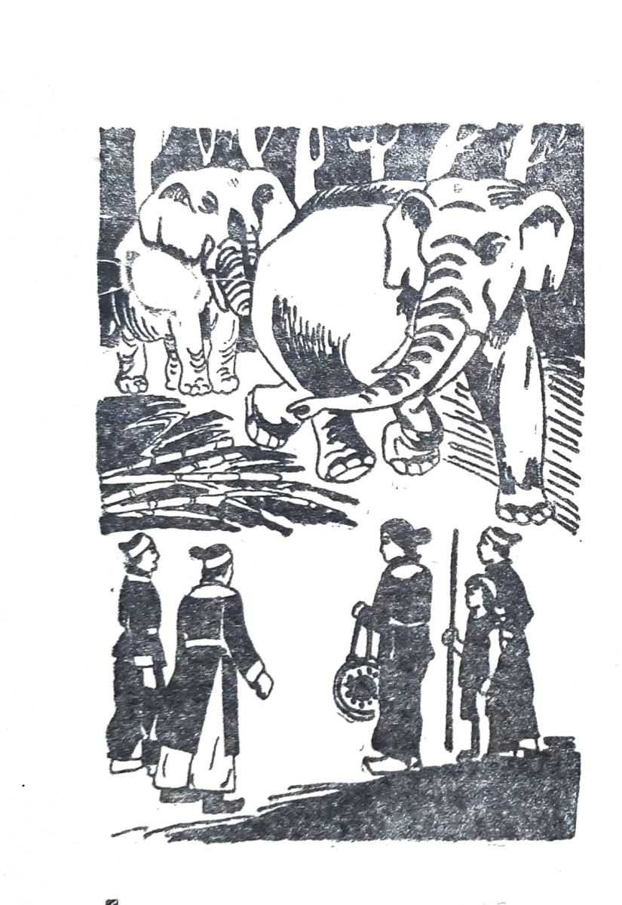

Trong số học trò của thầy võ Ngô Mãnh có mấy người Chàm. Anh em Ngô Văn Sở và Bùi Thị Xuân rất thân với họ. Cô Xuân quý nhất thiếu niên Chế A Na mới 14 tuổi. Một hôm Chế A Na bảo Bùi Thị Xuân:
-Quân khởi nghĩa phải có một đội voi thật đông thật mạnh. Sao chị không xin minh chủ cho lập đi.
-Chị không biết dạy voi mà.
-Em chỉ cho chị.
Mừng rỡ, Bùi Thị Xuân xin với Nguyễn Nhạc lập một đội voi. Các quản tượng đều tuyển chọn trong số chiến sĩ Ba Na và Chàm. Chế A Na tỏ ra là một quản tượng giỏi. Cậu giảng cho Bùi Thị Xuân nghe về các cách luyện voi.
Có cách dùng oai bắt voi phải sợ phải theo.
Có cách dùng hình phạt, luôn luôn giữ một vết thương ở mang tai voi rồi dùng mũi sắt nhọn chọc vào, buộc con vật vì sợ đau mà phải theo.
Có cách dùng thưởng, voi làm được là cho ăn cho uống để voi ham mà theo.
Có cách dùng tình mà chăm sóc mà dạy dỗ để voi mến voi theo. Đó là cách Chế A Na bày cho cô Xuân. Thì ra cậu ta thuộc một dòng họ chuyên bắt voi, luyện voi.

.Những con voi từ cao nguyên được đem về. Cô Xuân lăn lộn với những người quản tượng, vừa học nghề vừa chuyển những con voi đó thành một đội voi trận.
Đàn voi của cô Xuân tiến theo hiệu trống, lùi theo hiệu chiêng. Một tiếng là thong thả, hai tiếng là mau hơn, ba tiếng là thật dữ dội, liên hồi là chạy nước đại.
Những con voi được chia thành từng toán, mỗi toán năm con. Những ngũ voi này lần lượt được tập với các chiến sĩ để đàn thú quen với tiếng hò la và tiếng súng.
Rồi chúng được tập dùng vòi, dùng ngà hất những bù nhìn rơm lên trời, chờ cho bù nhìn rơi xuống đất thì xông đến dùng chân giày xéo lên.
Chế A Na bày cho Bùi Thị Xuân rất tỉ mỉ trong nghề luyện voi. Cậu nói:
-Con voi nó cũng như người ấy, biết thương, biết giận. Ta yêu nó, chăm nó thì nó sẽ quý mến ta, nghe lời ta.
Cậu đưa Bùi Thị Xuân lên rừng, lấy những cây làm thuốc cho voi.
Hai chị em chăm cho voi ăn, tắm cho chúng mát, cho chúng uống thuốc khi chúng bị bệnh. Khi chúng thuần, Xuân thưởng cho chúng những tấm mía ngọt lịm. Đàn voi qua tay hai chị em Xuân trở nên thuần thục, có kỷ luật. Chúng thành một sức mạnh của nghĩa quân.
Một lần Nguyễn Huệ đến xem tập voi, khen:
-Đàn voi của cô Hai thiệt hay. Chẳng những chúng biết nghe lời cô mà chúng còn đoán được ý cô nữa đó.
Bùi thị Xuân đáp, sau một nụ cười:
-Anh Ba, dùng tình cảm mà dạy thì voi sẽ thân mình như ruột thịt đó.